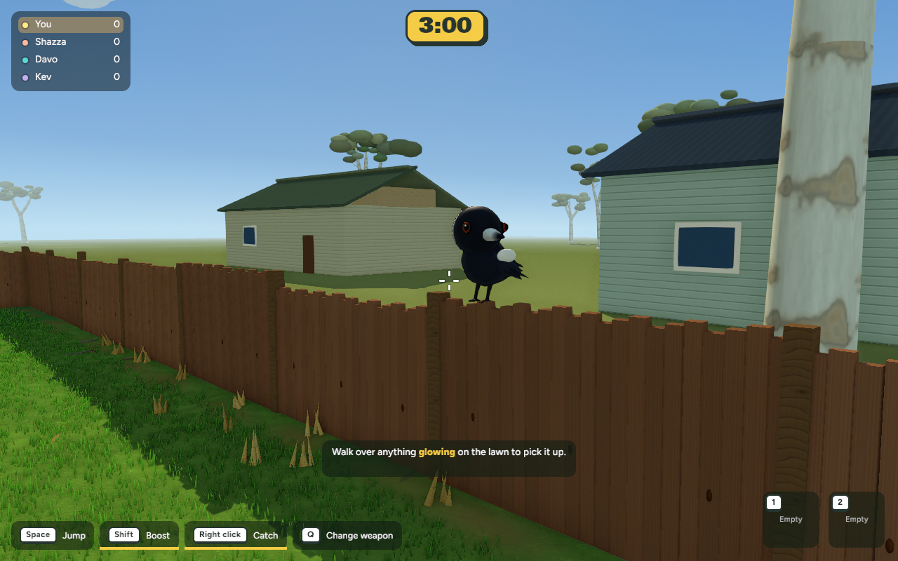
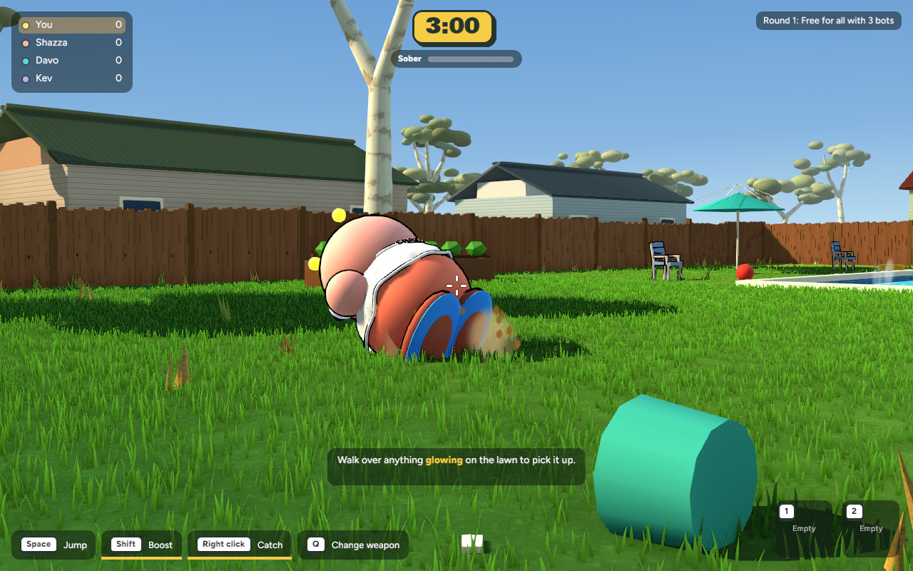
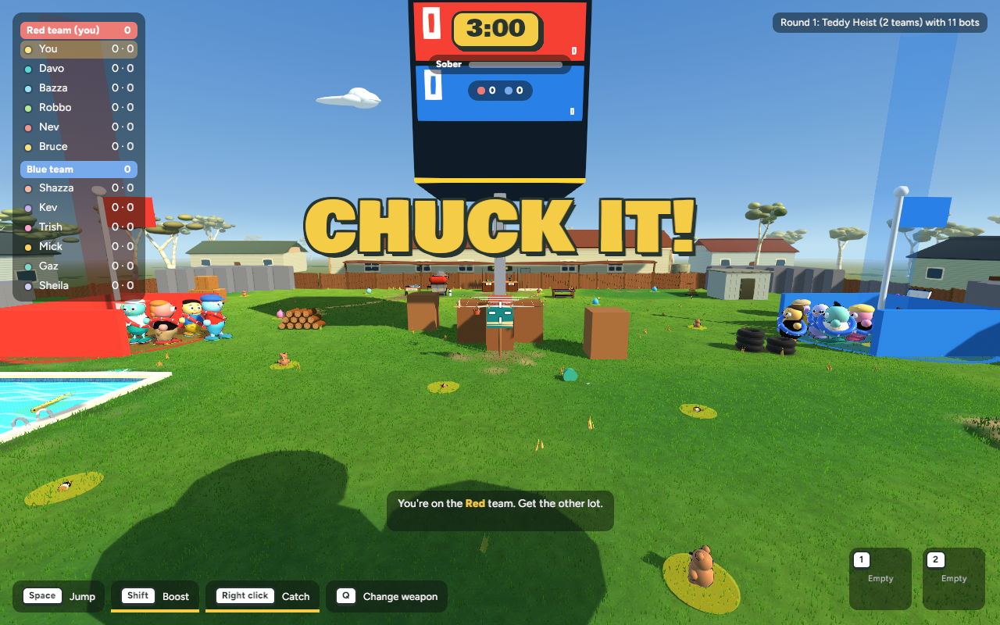
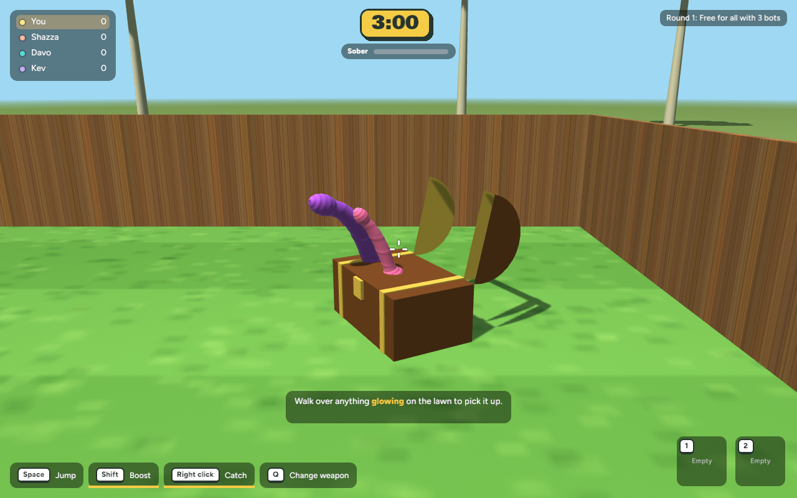
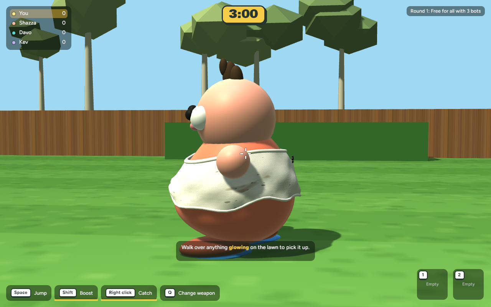

D15.2–D15.3 · Hero magpie in game
Real game capture of the Blender-authored magpie perched on the backyard fence. The short clip shows the water balloon approaching and the bird taking off in reaction.

Frames recorded from the running game; playback is a review-page image sequence.
View still capture · Projectile enters · Magpie lifts off
E16.4 · Bot knockdown spray review
The existing grounded bot-fall path emits a dirt spray. The capture fixture triggers a grounded fall and verifies the bot-down state. Bots are intentionally not configured to drink and stack; this verifies the available knockdown spray path without changing that gameplay rule.

Native game capture and frame sequence, with a close tracking camera.
Open the bot knockdown capture · Wide-yard context
E16.6 · SMAA and MSAA comparison

SMAA — keeps the existing ambient occlusion pathMSAA 4× — very similar edge quality in this viewChoice: SMAA. The isolated MSAA 4× run was quicker, but the scene screenshots are visually close and SMAA retains the high-quality SSAO treatment. Avoid adding the second AA pass in a typical run; both were measured with the same 600-sample capture protocol.
| AA | Mean FPS | p95 frame time | Over 16.67 ms |
|---|
| SMAA | 91.56 | 16.374 ms | 30 / 600 |
| MSAA 4× | 98.03 | 12.423 ms | 16 / 600 |
1280×800, Heist with 11 bots, Cheeky mode, high quality; same camera and scene. Measurements are wall-clock frame intervals, not GPU timestamps.
E16.7 · Low and High graphics quality
Graphics quality is a local preference saved on this computer. Low reduces shadow resolution and disables optional ambient occlusion and particle/decal visuals; High keeps the full visual effects.
| Preset | Mean FPS | p95 frame time | Over 16.67 ms |
|---|
| Low | 99.79 | 11.396 ms | 16 / 600 |
| High | 92.54 | 15.217 ms | 29 / 600 |
Later Low refresh · Later High refresh. Those two were captured with another game process active and are retained for transparency, not used as the matched comparison.
Same 1280×800 Heist + 11 bots + Cheeky stress scene. The matched run measured Low at 99.79 mean FPS and High at 92.54 mean FPS. A later refresh ran while another game process was active and measured only 43.93 / 42.20 FPS; treat that refresh as background-load contaminated. The matched initial comparison is the usable result. Wall-clock estimates, not GPU timestamps.
E19.3 · Chest and character close-ups
Matched, actual in-game captures from the starting commit and the current build use the same camera and seeded review setup. The chest and avatar were intentionally outside this graphics pass, so their appearance is unchanged; the pair confirms the new effects did not alter them.
 Chest · starting revision
Chest · starting revision
Chest · current revision Character · starting revision
Character · starting revision
Character · current revisionThese unchanged assets are a deliberate preservation check. The wider E19.3 pack still needs a matched BBQ before/after view; the existing BBQ close-up is linked below.
Chest before · Chest after · Character before · Character after · Earlier BBQ close-up
E17.6–E17.8 and E19 · Geometry and yard review
- Bevel mesh tests confirm authored dimensions and outward-facing surfaces remain consistent.
- Weathered rotation/variation is deterministic and fit-clamped; subtle seeded vertex colour variation fades with height.
- Full-yard palette and readability inspected in the matched captures above. Existing mesh counts remain 3,276 and materials 984 for both quality presets; image CPU footprint remains 50,598,652 bytes.
Full-yard captures: Low · High. Earlier BBQ close-ups: BBQ and surface detail. The chest and character matched close-ups are shown in the comparison section above; the remaining matched view is the BBQ.
The screenshots were generated by the native game review path. The Settings screenshot shows Low/High at the top of the panel. I verified the live selector by clicking Low and High in a temporary isolated app copy; the real saved user settings were not touched. Chest and character matched close-ups are shown above. The wider E19.3 pack still needs a matched BBQ before/after view.
Checks and next review
Native release build passed. All 260 app tests passed (one existing ignored test). Native and WebAssembly target checks passed after the particle change. The bot puff is visually captured; Low/High selection was clicked and verified in the rebuilt app. No changes to gameplay rules, modes, or scoring. Nothing has been committed, pushed, or published.
Recovery checkpoint · Settings-screen capture